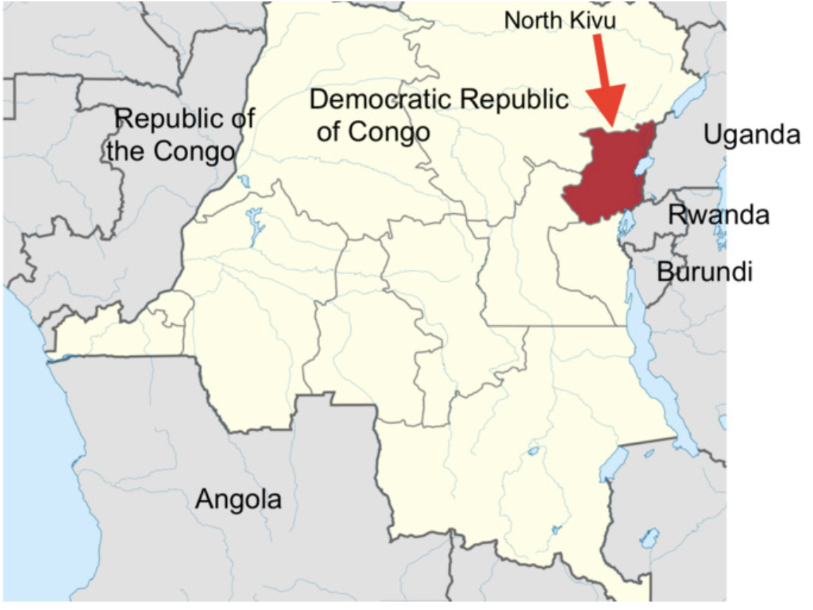

This case study is based in the petid nord region of North Kivu, in Eastern Democratic Republic of Congo.

The Role of State Capacity Building and Police Reforms in Peacebuilding
This case study is based in the petid nord region of North Kivu, in Eastern Democratic Republic of Congo.
There's a common belief that a strong state security apparatus automatically leads to peace. However, coercive police actions in Congo suggests otherwise.
Enhancing the coercive capacity of the Police in environments of intractable conflict can entrench a wartime political order that makes peace more elusive. In Congo, Police deployed their increased capacity towards destabilizing ends which reinforced the 'everyday war'.
Let's look at the situation in Petid Nord
Petid Nord was the epicenter of the successive RCD, CNDP and M23 conflicts. Unlike other regions that saw major conflict, North Kivu was also the focus of post-war recovery efforts, which led to heavy securitization and thus, a strong police force. Police presence is more visible here than elsewhere in the country.
The persistent conflicts and heavy securitization lead to 'everyday war', where the inhabitants have frequent adversarial encounters with the state.
"The police harass the population by coming to the quartier to pick up someone to show his identity card or who they can accuse of an offense... . People are traumatized, tortured, so we don't want to see uniforms anymore. When we see uniforms, all we see is prison, torture, and fines"
Civilians frequently report harassment, intimidation, demands for money, arbitrary arrests and even sexual assault by the Police.
"As soon as he sees a civilian, he will look for how he can procure money from him. If the civilian doesn't have money, the police will invent an infraction and demand a fine by law."
These encounters entrenches a political order where trust in the state remains low.
Why is the police force coercive?
Joining the police force is seen as a means of self-protection and access to privileges. Police officers often justify their actions through the logic of appropriate behaviour, by considering behaviours like levying informal fines on civilians for various transgressions as administration of justice and inseparable from "maintaining social order".
Further, through the logic of victimization, police officers view themselves as the primary victims of war, beleaguered by poverty and terrible living conditions. This allows them to justify the practice of extortion and intimidation.
"Yes, we use the population to solicit livelihoods. We receive money only at the end of the month and only after everyone [above us] has been paid already. After that, they call me to give the little that remains. So how am I going to say that I do not use the population?"
"While I am worrying about my family who spend each night [hungry], how am I able to defend the population? That [changes] me. If, sometimes, we behave as we shouldn't in the community, [it is because] we are hungry and unmotivated"
The situation is exacerbated by rapportage, the systems through which formal and informal payments are passed up through the internal hierarchies of the police force. This is incentivized by the superiors.
"The more civilians delay paying, the more they will be tortured in order to force them to release [money] as quickly as possible."
How does capacity building destabilize conflict ridden zones further?
Material capacity like vehicles and uniforms enables wider coverage for predatory practices and bolsters the symbolic authority.
Informational capacity (legal training) enhances the discursive authority of the police and creates opportunities for weaponization of legal knowledge for profits.
Coordination-Based Capacity i.e. formalized communication facilitates rapportage.
The author discusses some alternative models for capacity building, like fostering community-centred accountability, improving the salaries of workers and focusing on building a robust health, welfare and public service infrastructure to address root causes.
While the paper offers rich ethnographic insights into eastern DR Congo, its highly localized findings constrain broader applicability, leaving policymakers uncertain about how to effectively proceed with police capacity-building and state formation.
Bolstering police capacity without addressing the broader social and material landscapes of violence can lead to further destabilization.